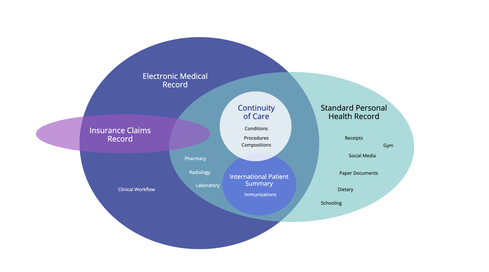

Personal Health Records
1.0.0-ballot - ci-build

Personal Health Records
1.0.0-ballot - ci-build

Personal Health Records - Local Development build (v1.0.0-ballot) built by the FHIR (HL7® FHIR® Standard) Build Tools. See the Directory of published versions
| Official URL: http://hl7.org/fhir/uv/phr/ImplementationGuide/hl7.fhir.uv.phr | Version: 1.0.0-ballot | |||
| Draft as of 2024-12-15 | Computable Name: PatientHealthRecordsIG | |||
The purpose of this implementation guide is to help the reader implement a Patient Health Record (in a programming language of their choice). The notion of a Patient Health Record (PHR) grows out of the concept of an Electronic Medical Record (EMR). The major difference being in ownership. The PHR being owned by the patient; and the EMR being owned by the hospital.
The following document will offer design guidance and standardized APIs for helping you develop your application; based on the healthcare industry standard of Fast Healthcare Interoperability Resources (FHIR). The scope of this document does not attempt to prescribe how you, the implementor, ought to go about programming your software. What it does provide, is guidance on how to successfully exchange data with other PHR and EHR apps. In effect, it documents widely supported (and government recognized) data standards and file formats for importing/exporting data into your software.
Readers are encouraged to think of this implementation guide as a marathon, not a sprint. To further the analogy, the authors of this guide hope to help software implementor plan on whether they are competing in a 26 mile standard marathon, a 50 mile ultramarathon, or an Iron Man triathalon. Similarly, implementing a complete PHR is no simple task, and in many situations may take upwards of a year of time or more to complete. We hope to provide guidance that will help implementors strategically plan their implementations and avoid common stumbling blocks.

The core of the Patient Health Record should be medical grade, and able to incorporate any medical record that you receive after a visit to the hospital; and which the Patient can then carry from one healthcare provider to the next. As such, a modern Patient Health Record needs to essentially be able to receive captured data from throughout the hospital. Emergency room, operating room, intensive care unit, laboratory, pharmacy, nursery, psychaitry. All of it is relavent.
This guide is particularly interested in the problem of collecting and aggregating patient health records from multiple health records into a coherent whole. In the healthcare industry, these types of records are known as longitudinal records.
Longitudinal Health Records - Assembly of records over a long time span; generally multiple decades (20 years or more), and possibly from different healthcare systems with different practices or standards of care.
Longitudinal Studies - Clinical studies that follow up on patient results after 20 or more years. Very important for pediatric studies.
Snowbirds - Many patients have more than one home location, and may spend time in different parts of the country on a seasonal basis. This leads to medical records that are fragmented.
Symptom Tracking - Symptoms of an illness can evolve as the condition improves or worsens, impacted by such things as climate or diet or circumstances of life.
Long COVID - An example of an ongoing longitudinal study that has captured national and worldwide attention, as we continued to determine the long-term effects of COVID-19.
Multiple Chronic Conditions - Not all medical conditions are reported to all healthcare providers. Conversely, specialists will report results for one area of medicine, which needs to be incorporate and reconciled with the patient's master record.
Differential Diagnosises - Case presentation for rare diseases can require differential diagnosis, as clinicians generate hypotheses and tests for one condition after another to explain a set of symptoms.
Alternative Care - Massage, Accupuncture, etc. - Patients may wish to track alternative modalities of healthcare that are not recognized or tracked by a healthcare provider or network.
Bring Your Own Device - Patients may wish to utilize consumer medical devices for tracking their own health.
Foster Care System - Custody and care of foster children, especially when it crosses state lines, can be complicated; requiring detailed record keeping to align both medical and court proceedings.
Migrants/Immigrants - Patients that have immigrated will necessarily have fragmented records that exist in multiple locations or countries.
Climate Refugees - Patients that have been forced to relocate, due to fires, floods, and similar events, will likely have medical records in multiple clinics or hospitals.
Copyright (c) 2021+ Health Level Seven International and MITRE.org.
Published under the Creative Commons "Attribution 4.0 International" (CC BY 4.0) License
This publication includes IP covered under the following statements.
| IG | Package | FHIR | Comment |
|---|---|---|---|
  Personal Health Records Personal Health Records | hl7.fhir.uv.phr#1.0.0-ballot | R4 | |
 HL7 Terminology (THO) HL7 Terminology (THO) | hl7.terminology.r4#6.1.0 | R4 | Automatically added as a dependency - all IGs depend on HL7 Terminology |
 FHIR Extensions Pack FHIR Extensions Pack | hl7.fhir.uv.extensions.r4#5.1.0 | R4 | Automatically added as a dependency - all IGs depend on the HL7 Extension Pack |
Package hl7.fhir.uv.extensions.r4#5.1.0 This IG defines the global extensions - the ones defined for everyone. These extensions are always in scope wherever FHIR is being used (built Sat, Apr 27, 2024 18:39+1000+10:00) |
There are no Global profiles defined
This is an R4 IG. None of the features it uses are changed in R4B, so it can be used as is with R4B systems. Packages for both R4 (hl7.fhir.uv.phr.r4) and R4B (hl7.fhir.uv.phr.r4b) are available.
IG © 2022+ HL7 International / Patient Empowerment. Package hl7.fhir.uv.phr#1.0.0-ballot based on FHIR 4.0.1. Generated 2024-12-15
Links: Table of Contents |
QA Report
| Version History |
 |
Propose a change
|
Propose a change